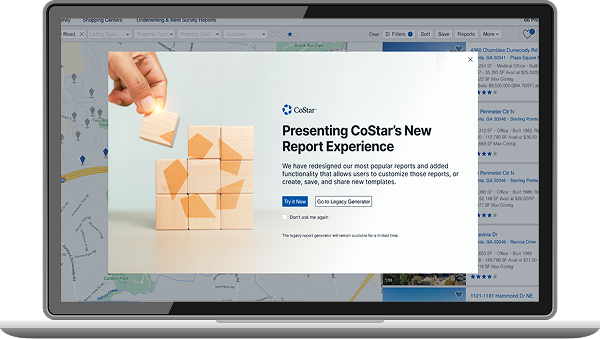
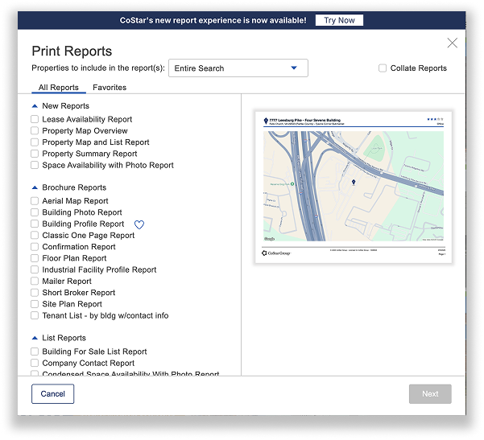
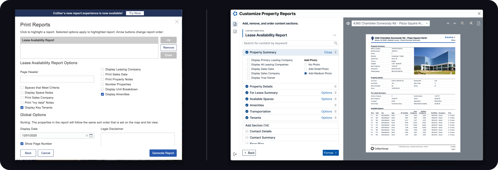
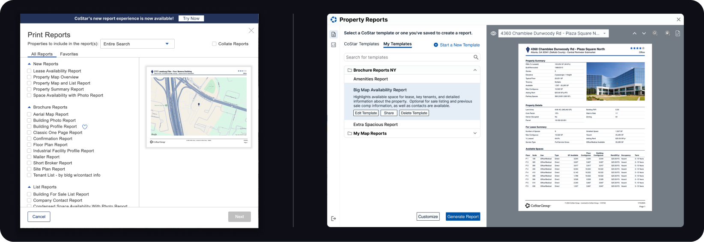
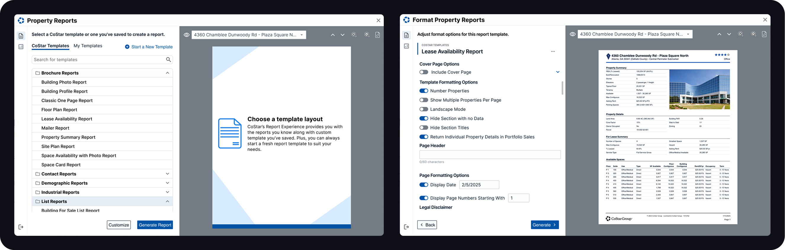

Over a decade of experience in UX/UI, Branding, and Product Design, bridging the gap between complex business goals and human-centric solutions. I specialize in UX/UI and Branding that drives measurable impact, defined by elegant execution and moments of unexpected delight.
The Report Experience

Overview
Key Features at a Glance
Tailored Customization: Users can curate specific property details to match their client's unique priorities.
Professional Branding: A custom cover page builder ensures every report arrives as a presentation-ready deliverable.
Data Synthesis: Simplifies complex property data into a digestible, visually organized format.
| Features | The Old CoStar Templates | The Report Experience |
|---|---|---|
| Custom Templates | ✕ | ✓ |
| Customize Sections | ✕ | ✓ |
| Cover Page | ✕ | ✓ |
| Share | ✕ | ✓ |
| Manage Templates | ✕ | ✓ |
The Friction Point

Brokers faced a fragmented and repetitive workflow when preparing multi-property reports. To meet client specifications, they were forced into a manual "strip-and-rebuild" process: selecting rigid report templates, and exporting documents only to perform final formatting and structural reordering in external editors. This disconnected experience created a bottleneck in high-stakes client delivery.
Impact & Efficiency: From Manual Toil to Strategic Workflow
The introduction of the new Report Experience didn't just add features; it fundamentally redefined the broker's relationship with property data. By automating the "strip-and-rebuild" cycle, we shifted the focus from manual document assembly to strategic client advisory.
Refining the Process: Bridging User Intent with Technical Feasibility
Our discovery phase revealed a significant gap between the brokers' needs and the existing system's rigidity. To bridge this, I collaborated closely with the engineering team to audit our backend logic, transforming it from a static "one-to-one" data fetch into a modular component architecture. This technical pivot unlocked a suite of high-impact features that directly addressed our primary user friction points.
Dynamic Sequencing (Drag & Drop): To solve the "bottleneck" of the tiny viewport, we introduced a high-visibility draggable index. By decoupling the report's structure from its detailed content, we allowed brokers to manipulate the narrative of their reports at scale, transforming a tedious administrative task into a strategic, high-speed customization experience.

Granular Customization: Beyond just "adding sections," we introduced the ability to toggle specific data points within a module to eliminate clutter.
The "Live-Preview" Feedback: Implemented a side-by-side preview mode to reduce the "edit-download-check" cycle, giving users immediate confidence in their document's layout.

Modular Templating: We developed a library of pre-configured property modules that could be saved and shared across the brokerage, standardizing the brand's visual identity while allowing for individual flexibility.
Modernizing the Report Interface
While the backend logic provided the power, the interface needed a visual overhaul to match the premium nature of the properties being reported. We transitioned from a dated, utility-heavy UI to a modern, editorial aesthetic that prioritizes white space, typography, and visual clarity.

The "Clean Canvas" Approach: We stripped away heavy borders and unnecessary containers, replacing them with a refined 8px soft-grid system. This created a "breathable" layout that allows high-resolution property photography to lead the experience.
Typography as Navigation: By implementing a new typographic scale, we used bold headers and subtle sub-labels to guide the broker's eye through dense copy and inputs without causing cognitive fatigue.
The "Surprise & Delight" Palette: We introduced a sophisticated, neutral color palette with "Action Blue" accents, ensuring that the interface felt like a professional tool rather than a spreadsheet.
Measurable Gains in Velocity & Accuracy
Massive Time Reclamation: For high-volume reports containing hundreds of properties, the manual reordering and formatting process previously took hours. Our modular logic and bulk-editing tools reduced this to a matter of minutes — a 90%+ increase in delivery velocity.
Operational Scalability (The Template Library): We introduced a "Shareable Template" ecosystem. This allowed top-performing brokers to socialize their successful report structures across the firm, standardizing a "Golden Standard" for client deliverables and onboarding new agents faster.
Reduced Human Error: By moving the customization in-app, we eliminated the "copy-paste" risks inherent in external editors (Word/PDF), ensuring that property data remained live and accurate up until the moment of delivery.
Thank you for viewing!!!
All feedback is welcomed.